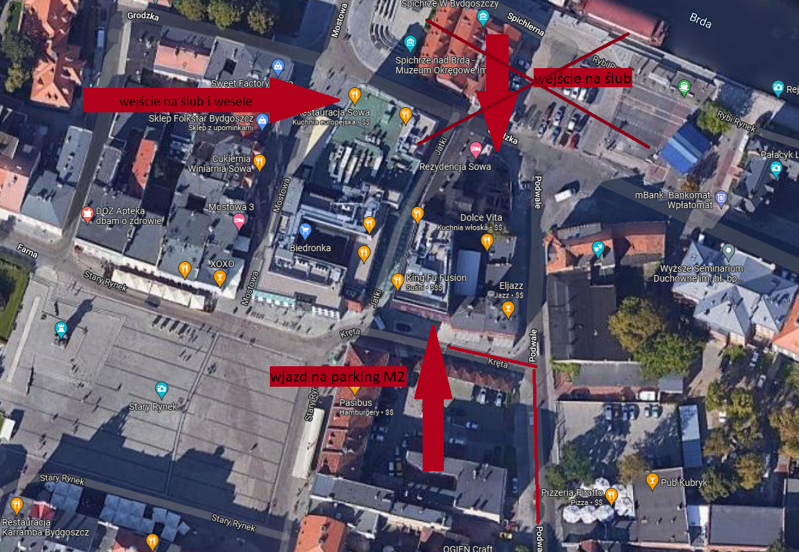
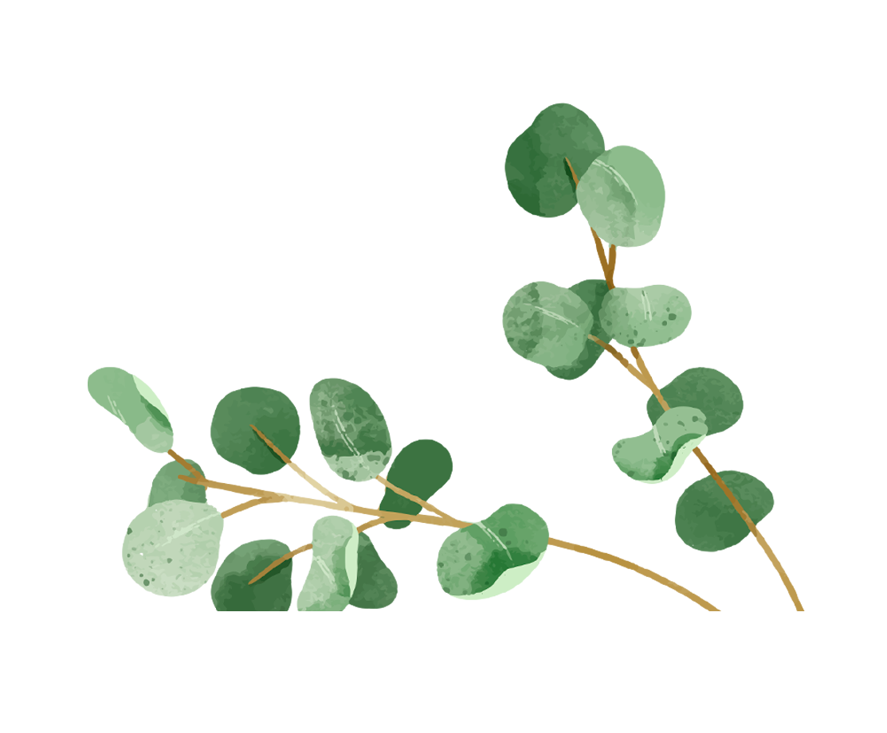
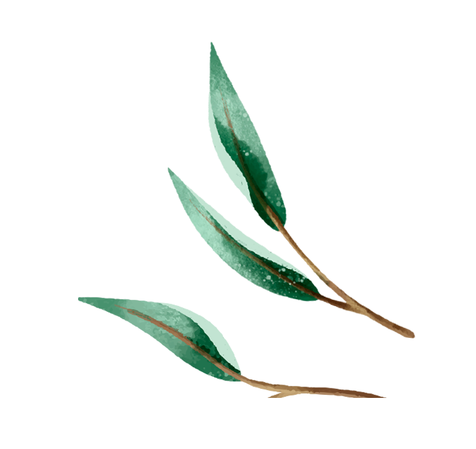

Ślub Beaty i Jacka
21 maja 2022
21 maja 2022
Do ślubu pozostało
- dni
- godzin
- minut
- sekund
💖
🥳
🎉
💑
Ślub i przyjęcie weselne
Przyjęcie
21 maja 2022
Tego dnia zapraszamy na nasz ślub na tarasie, a następnie na przycięcie weselne w Restauracji Sowa. Jest możliwość zaparkowania samochodu w parkingu podziemnym restauracji (wjazd od ulicy Krętej, obok bramy jest domofon, którym można się zgłosić). Na tym parkingu mogą parkować tylko pojazdy bez instalacji gazowej. Jest również opcja zaparkowania na parkingu publicznym, w weekendy parking taki jest bezpłatny.
Ceremonia zaślubin
18:00
Taras widokowy Rezydencja Sowa ul. Grodzka 12, wejście obok Restauracji Sowa. W przypadku braku pogody ślub będzie przeniesiony do Restauracji Sowa, informację taką wyślemy SMS-em.
Wesele
18:30
Odbędzie się w Restauracji Sowa ul. Mostowa 4 Bydgoszcz, w Sali Waniliowej na pierwszym piętrze, schody z lewej strony od wejścia.

Beata Kuźlecka i Jacek Mękal

Potwierdź swoje przybycie
Prosimy o potwierdzenie obecności do 21 kwietnia 2022.
Beata
Jacek

Zdjęcia z imprezy
Tutaj pojawią się zdjęcia ze ślubu i wesela.
